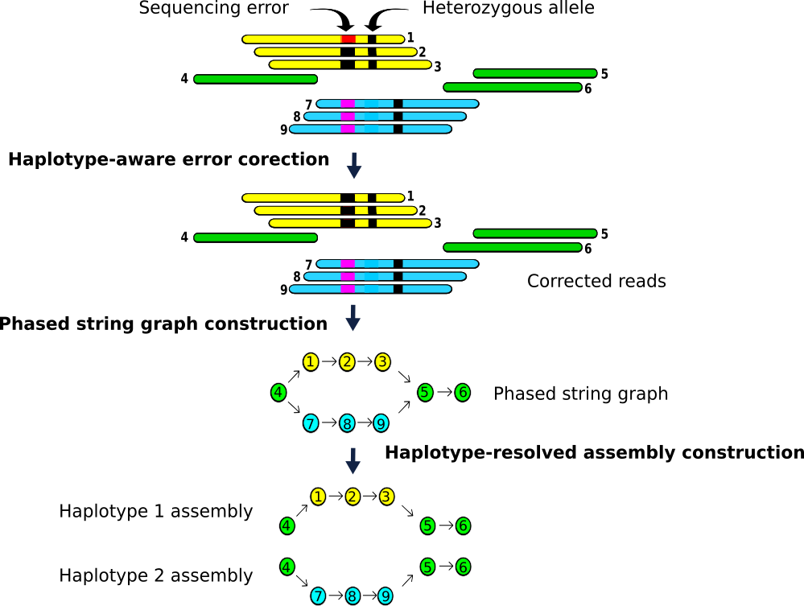

This tutorial is not in its final state. The content may change a lot in the next months.
Because of this status, it is also not listed in the topic pages.
An assembly can be defined as a hierarchical data structure that maps the sequence data to a putative reconstruction of the target (Miller et al. 2010). Advances in sequencing technologies over the last few decades have revolutionised the field of genomics, allowing for a reduction in both the time and resources required to carry out de novo genome assembly. Until recently, second-generation DNA sequencing technologies allowed to produced either short highly accurate reads, or error-prone long reads. However, in recent years, third-generation sequencing technologies, usually known as real-time single-molecule sequencing, have become dominant in de novo assembly of large genomes. It uses native DNA fragments to sequence instead of template amplification, avoiding copying errors, sequence-dependent biases and information losses (Hon et al. 2020). An example of such a technology is PacBio Single molecule high-fidelity (HiFi) Sequencing, which enables average read lengths of 10-20 kb with average sequence identity greater than 99%, which is one of the technologies used to generate the data for this tutorial.
Deciphering the structural organisation of complex vertebrate genomes is currently one of the most important problems in genomics. (Frenkel et al. 2012). However, despite the great progress made in recent years, a key question remain to be answered: what combination of data and tools can produce the highest quality assembly? In order to adequately answer this question, it is necessary to analyse two of the main factors that determine the difficulty of genome assembly processes: repeated sequences and heterozigosity.
Repetitive sequences can be grouped into two categories: interspersed repeats, such as transposable elements (TE) that occur at multiple loci throughout the genome, and tandem repeats (TR), that occur at a single locus (Tørresen et al. 2019). Repetitive sequences, and TE in particular, are an important component of eukariotes genomes, constituting more than a third of the genome in the case of mammals (Sotero-Caio et al. 2017, Chalopin et al. 2015). In the case of tamdem repeats, various estimates suggest that they are present in at least one third of human protein sequences (Marcotte et al. 1999). TE content is probably the main factor contributing to fragmented genomes, specially in the case of large genomes, as its content is highly correlated with genome size (Sotero-Caio et al. 2017). On the other hand, TR usually lead to local genome assembly collapse and partial or complete loss of genes, specially when the read length of the sequencing method is shorter than the TR (Tørresen et al. 2019).
In the case of heterozygosity, haplotype phasing, that is, the identification of alleles that are co-located on the same chromosome, has become a fundamental problem in heterozygous and polyploid genome assemblies (Zhang et al. 2020). A common strategy to overcome these difficulties is to remap genomes to a single haplotype, which represents the whole genome. This approach is useful for highly inbred samples that are nearly homozygous, but when applied to highly heterozygous genomes, such as aquatic organism, it missses potential differences in sequence, structure, and gene presence, usually leading to ambiguties and redundancies in the initial contig-level assemblies (Angel et al. 2018, Zhang et al. 2020).
To address these problems, the G10K consortium launched the Vertebrate Genomes Project (VGP), whose goal is generating high-quality, near-error-free, gap-free, chromosome-level, haplotype-phased, annotated reference genome assembly for each of the vertebrate species currently present on planet Earth (Rhie et al. 2021). The protocol proposed in this tutorial, the VGP assembly pipeline, is the result of years of study and analysis of the available tools and data sources.
The figure 1 represents the VGP assembly pipeline.
Figure 1: VPG Pipeline 2.0
In order to facilitate the development of the workflow, we will structure it in four main sections:
Genome profile analysis
HiFi long read phased assembly with Hifiasm
Hybrid scaffolding based on phased assembly and Bionano data
Hybrid scaffolding based on a phased assembly and Hi-C mapping data
Background on datasets
In order to reduce processing times, we will use samples from Saccharomyces cerevisiae, one of the most intensively studied eukaryotic model organisms in molecular and cell biology. This organisms can be haploid or diploid, depending the stage of its life cycle. Both cell types are stable and can reproduce asexually by mitosis.
The VGP assembly pipeline requires datasets generated by three different technologies: PacBio HiFi reads, Bionano optical maps, and Hi-C chromatin interaction maps.
PacBio HiFi reads rely on the Single Molecule Real-Time (SMRT) sequencing technology. It is based on real-time imaging of fluorescently tagged nucleotides as they are synthesized along individual DNA template molecules, combining multiple subreads of the same circular template using a statistical model to produce one highly accurate consensus sequence, along with base quality values (figure 2). This technology allows to generate long-read sequencing dataseets with read lengths averaging 10-25 kb and accuracies greater than 99.5%.
Figure 2: PacBio HiFi sequencing
Optical genome mapping is a method for detecting structural variants. The generation of Bionano optical maps starts with high molecular weight DNA, which is labeled at specific sequences motif with a fluorescent dye, resulting in a unique fluorescence pattern for each individual genome. The comparison of the labelled fragments among different samples enables the detection of structural variants. Optical maps are integrated with the primary assemby sequence in order to identify and correct potential chimeric joints, and estimate the gap sizes.
The high-throughput chromosome conformation capture (Hi-C) technology is based on the capture of the chromatin conformation, enabling the identification of topological domains. Hi-C chromatin interaction maps methods first crosslink the chromatin in its 3D conformation. The crosslinked DNA is digested using restriction enzymes, and the digested ends are filled with biotinylated nucleotides. Next, the blunt ends of spatially proximal digested end are ligated, preserving the chromosome interaction regions. Finally, the DNA is purified to assure that only fragments originating from ligation events are sequenced.
From Rules menu select Add / Modify Column Definitions
Click Add Definition button and select List Identifier(s): column A
Click Add Definition button and select URL: column B
Click Add Definition button and select Type: column C
Clich Add Definition button and select Group Tag: column D
Clich Add Definition button and select Collection Name: column E
Click Apply and press Upload
Data quality assessment
To begin our analysis we will carry out the evaluation and pre-processing of our data. In order to identify potential anomalies in the data, we are going to use FastQC, an open-source tool that provides a simple way to quality control raw sequence data.
hands_on Hands-on: Quality check
Run FastQCtool with the following parameters
param-collection“Raw read data from your current history”: HiFi_collection
MultiQCTool: toolshed.g2.bx.psu.edu/repos/iuc/multiqc/multiqc/1.8+galaxy1 with the following parameters:
In “Results”:
“Which tool was used generate logs?”: FastQC
param-collection“Dataset collection”: select the HiFi_collection dataset.
In “Report title”: HiFi quality report
Click on the galaxy-eye (eye) icon and inspect the generated HTML file
Figure 3: PacBio HiFi qualiry report
As we can see, the mean Phred score is over 80 in all the samples which means, which means that the base call accuracy is around 99.999999%!
comment Comments
For more information on the topic of quality control, please see our training materials here.
According the quality report, less that 0.1% of the reads include adaptor sequences. Despide of this, we will trim the residual adaptors sequences by using Cutadapt, in order to avoid potential reads which could interfer in the subsequent steps.
hands_on Hands-on: Optional step: primer removal
CutadaptTool: toolshed.g2.bx.psu.edu/repos/lparsons/cutadapt/cutadapt/3.4 with the following parameters:
param-repeat“Insert 5’ or 3’ (Anywhere) Adapters”
“Source”: Enter custom sequence
“Enter custom 5’ or 3’ adapter sequence”: ATCTCTCTCAACAACAACAACGGAGGAGGAGGAAAAGAGAGAGAT
param-repeat“Insert 5’ or 3’ (Anywhere) Adapters”
“Source”: Enter custom sequence
“Enter custom 5’ or 3’ adapter sequence”: ATCTCTCTCTTTTCCTCCTCCTCCGTTGTTGTTGTTGAGAGAGAT
In “Adapter Options”:
“Match times”: 3
“Maximum error rate”: 0.1
“Minimum overlap length”: 35
“Look for adapters in the reverse complement”: True
In “Filter Options”:
“Discard Trimmed Reads”: Yes
Rename the output file as HiFi_collection (trim)
Genome profile analysis
An important step before starting a de novo genome assembly project is to proceed with the analysis of the genome profile. Determining these characteristics in advance has the potential to reveal whether an analysis is not reflecting the full complexity of the genome, for example, if the number of variants is underestimated or a significant fraction of the genome is not assembled (Vurture et al. 2017).
Traditionally DNA flow citometry was considered the golden standart for estimating the genome size, one of the most important factors to determine the required coverage level. However, nowadays experimental methods have been replaced by computational approaches Wang et al. 2020. One of the most widely used procedures for undertaking genomic profiling is the analyis of k-mer frequencies. It allows to provide information not only about the genomic complexity, such as the genome size, levels of heterozygosity and repeat content, but also about the data quality. In addition, k-mer spectra analysis can be used in a reference-free manner for assessing genome assembly quality metrics (Rhie et al. 2020).
details K-mer size, sequencing coverage and genome size
K-mers are unique substrings of length k contained within a DNA sequence. For example, the DNA sequence TCGATCACA can be decomposed into six unique k-mers that have five bases long: TCGAT, CGATC, GATCA, ATCAC and TCACA. A sequence of length L will have L-k+1 k-mers. On the other hand, the number of possible k-mers can be calculated as nk, where n is number of possible monomers and k is the k-mer size.
Bases
K-mer size
Total possible k-mers
4
1
4
4
2
16
4
3
64
4
4
256
4
…
…
4
10
1.048.576
Thus, the k-mer size is a key parameter, which must be large enough to map uniquely to the genome, but not too large, since it can lead to wasting computational resources. In the case of the human genome, k-mers of 31 bases in length lead to 96.96% of unique k-mers.
Each unique k-mer can be assigned a value for coverage based on the number of times it occurs in a sequence, whose distribution will approximate a Poisson distribution, with the peak corresponding to the average genome sequencing depth. From the genome coverage, the genome size can be easily computed.
In section we will use two basic tools to computationally estimate the genome features: Meryl and GenomeScope.
Generation of k-mer spectra with Meryl
Meryl will allow us to perform the k-mer profiling by decomposing the sequencing data into k-lenght substrings and determining its frequency. The original version was developed for use in the Celera Assembler, and it comprises three modules: one for generating k-mer databases, one for filtering and combining databases, and one for searching databases. The k-mer database is stored in sorted order, similar to words in a dictionary (Rhie et al. 2020).
comment K-mer size estimation
Given an estimated genome size (G) and a tolerable collision rate (p), an appropriate k can be computed as k = log4 (G(1 − p)/p).
hands_on Hands-on: Generate k-mers count distribution
MerylTool: toolshed.g2.bx.psu.edu/repos/iuc/meryl/meryl/1.3+galaxy2 with the following parameters:
“Operation type selector”: Count operations
“Count operations”: Count: count the ocurrences of canonical k-mers
We used 21 as k-mer size, as this length is has demonstrated to be sufficiently long that most k-mers are not repetitive and is short enough that the analysis will be more robust to sequencing errors. For extremely large (haploid size over 10 Gb) and/or very repetitive genomes, it is recommended to use larger k-mer lengths to increase the number of unique k-mers.
Rename it Collection meryldb
MerylTool: toolshed.g2.bx.psu.edu/repos/iuc/meryl/meryl/1.3+galaxy1 with the following parameters:
“Operation type selector”: Operations on sets of k-mers
“Operations on sets of k-mers”: Union-sum: return k-mers that occur in any input, set the count to the sum of the counts
param-file“Input meryldb”: Collection meryldb
Rename it as Merged meryldb
MerylTool: toolshed.g2.bx.psu.edu/repos/iuc/meryl/meryl/1.3+galaxy0 with the following parameters:
“Operation type selector”: Generate histogram dataset
param-file“Input meryldb”: Merged meryldb
Finally, rename it as Meryldb histogram.
Genome profiling with GenomeScope2
The next step is to computationally infer the genome properties from the k-mer count distribution generated by Meryl, for which we’ll use GenomeScope2. It relies in a nonlinear least-squares optimization to fit a mixture of negative binomial distributions, generating estimated values for genome size, repetitiveness, and heterozygosity rates (Ranallo-Benavidez et al. 2020).
hands_on Hands-on: Estimate genome properties
GenomeScopeTool: toolshed.g2.bx.psu.edu/repos/iuc/genomescope/genomescope/2.0 with the following parameters:
“K-mer length used to calculate k-mer spectra”: 21
In “Output options”: mark Generate a file with the model parameters and Summary of the analysis
In “Advanced options”:
“Create testing.tsv file with model parameters”: true
Genomescope will generate six outputs:
Plots
Linear plot: K-mer spectra and fitted models: frequency (y-axis) versus coverage.
Log plot: logarithmic transformation of the previous plot.
Transformed linear plot: K-mer spectra and fitted models: frequency times coverage (y-axis) versus coverage (x-axis). It allows to increases the heights of higher-order peaks, overcoming the effect of high heterozygosity.
Transformed log plot: logarithmic transformation of the previous plot.
Model: this file includes a detailed report about the model fitting.
Summary: it includes the properties infered from the model, such as genome haploid length and the percentage of heterozygosity.
Now, let’s analyze the k-mer profiles, fitted models and estimated parameters:
Figure 4: Genomescope2 plot
As we can see, there is an unique peak centered around 28, which is the coverage with the highest number of different 21-mers. According the normal-like k-mer spectra, we can infer that it is a haploid genome. The The large number of unique k-mers on the left size with frequence around one is due to error during the sequencing process.
Before jumping to the next section, we need to carry out some operation on the output generated by Genomescope2. The goal some parameters which at a later stage will be used by purge_dups (Guan et al. 2019). Lets start with the estimated genome size.
hands_on Hands-on: Get estimated genome size
ReplaceTool: toolshed.g2.bx.psu.edu/repos/bgruening/text_processing/tp_find_and_replace/1.1.3 with the following parameters:
param-file“File to process”: summary (output of GenomeScopetool)
“Find pattern”: bp
“Replace all occurences of the pattern”: Yes
“Find and Replace text in”: entire line
ReplaceTool: toolshed.g2.bx.psu.edu/repos/bgruening/text_processing/tp_find_and_replace/1.1.3 with the following parameters:
param-file“File to process”: output file of Replacetool)
“Find pattern”: ,
“Replace all occurences of the pattern”: Yes
“Find and Replace text in”: entire line
Search in textfiles (grep)Tool: toolshed.g2.bx.psu.edu/repos/bgruening/text_processing/tp_grep_tool/1.1.1 with the following parameters:
param-file“Select lines from”: output file of the previous step.
“Type of regex”: Basic
“Regular Expression”: Haploid
Convert delimiters to TABTool: Convert characters1 with the following parameters:
param-file“in Dataset”: output of Search in textfilestool)
Advanced CutTool: toolshed.g2.bx.psu.edu/repos/bgruening/text_processing/tp_cut_tool/1.1.0 with the following parameters:
param-file“File to cut”: output of Search in textfilestool)
“Cut by”: fields
“List of Fields”: Column: 5
Parse parameter valueTool: param_value_from_file with the following parameters:
param-file“Input file containing parameter to parse out of”: output of Advanced Cuttool)
“Select type of parameter to parse”: Integer
Rename the output as Estimated genome size.
question Questions
What is the estimated genome size?
solution Solution
The estimated genome size is 12664060 bp.
Now let’s parse the upper bound for the read depth estimation parameter.
hands_on Hands-on: Get maximum read depth
ComputeTool: toolshed.g2.bx.psu.edu/repos/devteam/column_maker/Add_a_column1/1.6 with the following parameters:
“Add expression”: 1.5*c3
param-file“as a new column to”: model_params (output of GenomeScopetool)
“Round result?”: Yes
“Input has a header line with column names?”: No
ComputeTool: toolshed.g2.bx.psu.edu/repos/devteam/column_maker/Add_a_column1/1.6 with the following parameters:
“Add expression”: 3*c7
param-file“as a new column to”: output of Computetool)
“Round result?”: Yes
“Input has a header line with column names?”: No
Rename it as Parsing temporal output.
Advanced CutTool: toolshed.g2.bx.psu.edu/repos/bgruening/text_processing/tp_cut_tool/1.1.0 with the following parameters:
param-file“File to cut”: Parsing temporal output (output of Computetool)
“Cut by”: fields
“List of Fields”: Column 8
Parse parameter valueTool: param_value_from_file with the following parameters:
param-file“Input file containing parameter to parse out of”: output (output of Advanced Cuttool)
“Select type of parameter to parse”: Integer
Rename it as Maximum depth
question Questions
What is the estimated maximum depth?
solution Solution
The estimated maximum depth is 63 reads.
Finally, let’s parse the transition between haploid and diploid coverage depths parameter.
hands_on Hands-on: Get transition parameter
Advanced CutTool: toolshed.g2.bx.psu.edu/repos/bgruening/text_processing/tp_cut_tool/1.1.0 with the following parameters:
param-file“File to cut”: Parsing temporal output (output of Computetool)
“Cut by”: fields
“List of Fields”: Column 7
Parse parameter valueTool: param_value_from_file with the following parameters:
param-file“Input file containing parameter to parse out of”: output (output of Advanced Cuttool)
“Select type of parameter to parse”: Integer
Rename it as Transition parameter
question Questions
What is the estimated transition parameter?
solution Solution
The estimated transition parameter is 21 reads.
HiFi long read phased assembly with hifiasm
Once we have finished the genome profiling stage, we can start the genome assembly with hifiasm, a fast open-source de novo assembler specifically developed for PacBio HiFi reads.
Genome assembly with hifiasm
One of the key focus of hifiams is to different copies of a segmental duplication involving a single segregating site, allowing to resolve near-identical, but not exactly identical, repeats and segmental duplications (Cheng et al. 2021).
comment Hifiasm algorithm details
By default hifiasm performs three rounds of haplotype-aware error correction to correct sequence errors but keeping heterozygous alleles. A position on the target read to be corrected is considered informative if there are tow different nucleotides at the position of the alignment, and each type is supported by at least tree reads.
Figure 5: Hifiasm algorithm overview. Orange and blue bars represent the reads with heterozygous alleles carrying local phasing information, while green bars come from the homozygous regions without any heterozygous alleles.
Then, hifiasm builds a phased assembly string graph with local phasing information from the corrected reads. Only the reads coming from the same haplotype are connected in the phased assembly graph. After transitive reduction, a pair of heterozygous alleles will be represented by a bubble in the string graph. If there are no additional data, hifiasm arbitrarily selects one side of each bubble and outputs a primary assembly. For a heterozygous genome, the primary assembly generated at this step may still contain haplotigs from more than one homologous haplotype.
hands_on Hands-on: Phased assembly with hifiasm
HifiasmTool: toolshed.g2.bx.psu.edu/repos/bgruening/hifiasm/hifiasm/0.14+galaxy0 with the following parameters:
“Assembly mode”: Standard
param-file“Input reads”: HiFi_collection (trim) (output of Cutadapttool)
“Options for purging duplicates”: Specify
“Coverage upper bound”: value obtained previously
“Options for Hi-C partition”: Specify
“Hi-C R1 reads”: SRR7126301_1
“Hi-C R2 reads”: SRR7126301_2
Rename the Hi-C hap1 balanced contig graph as Primary contig graph and add a #primary tag
Rename the Hi-C hap2 balanced contig graph as Alternate contig graph and add a #alternate tag
Hifiasm generates four outputs in GFA format; this format is specially designed to capture sequence graphs as the product of an assembly, a representation of variation in genomes, splice graphs in genes, or even overlap between reads from long-read sequencing technology.
Convert GFA format to FASTA with GFA to FASTA
We have obtained the fully phased contig graphs of the primary and alternate haplotypes, but the output format of hifiasm is not adequate for the subsequent steps, so we will convert them into fasta format.
hands_on Hands-on: convert GFA to FASTA
GFA to FASTATool: toolshed.g2.bx.psu.edu/repos/iuc/gfa_to_fa/gfa_to_fa/0.1.2 with the following parameters:
param-files“Input GFA file”: select Primary contig graph and the Alternate contig graph datasets (output of Hifiasmtool)
Rename the outputs as Primary contig FASTA and Alternate contig FASTA.
Post-assembly processing
An ideal haploid representation would consist of one allelic copy of all heterozygous regions in the two haplomes (haplotype contigs), as well as all hemizygous regions from both haplomes. However, the allelic relationship between haplotypes still present a problem for de novo genome assembly, specially in high heterozygous genomes; sequence divergence between pair of allelic sequences can lead to assemble there regions as separate contigs, rather than the expected single haplotype-fused contig. It can result in assemblies signicantly larger than the haploid genome size, which can lead to interferences in downstream stages, such as scaffolding and gene annotation (Guan et al. 2019, Roach et al. 2018).
Usually, allelic relationships are inferred at the post-assembly stage. Despite the haplotig processing requites multiple steps, the approach used in this tutorial can be summaryzed in two steps: firstly we will identify the syntenic contigs by using the mapped read coverage and minimap2 (Li 2018) alignments. Then, we will resolve the haplotigs and overlaps in the primary assembly by using purge_dups.
Remove haplotypic duplication with purge_dups
This step includes 11 steps, summarized in the following scheme:
Figure 6: Purge_dups pipeline
hands_on Hands-on: purge_dups pipeline
Collapse CollectionTool: toolshed.g2.bx.psu.edu/repos/nml/collapse_collections/collapse_dataset/4.2 with the following parameters:
param-collection“Collection of files to collapse into single dataset”:HiFi_collection (trim)
Rename de output as HiFi reads collapsed
Map with minimap2Tool: toolshed.g2.bx.psu.edu/repos/iuc/minimap2/minimap2/2.17+galaxy4 with the following parameters:
“Will you select a reference genome from your history or use a built-in index?”: Use a genome from history and build index
param-file“Use the following dataset as the reference sequence”: Primary contig FASTA
“Single or Paired-end reads”: Single
param-collection“Select fastq dataset”: HiFi_collection (trim) (output of Cutadapttool)
“Select a profile of preset options”: Long assembly to reference mapping (-k19 -w19 -A1 -B19 -O39,81 -E3,1 -s200 -z200 --min-occ-floor=100). Typically, the alignment will not extend to regions with 5% or higher sequence divergence. Only use this preset if the average divergence is far below 5%. (asm5)
In “Set advanced output options”:
“Select an output format”: paf
Rename the output as Reads mapped to contigs
purge_dupsTool: toolshed.g2.bx.psu.edu/repos/iuc/purge_dups/purge_dups/1.2.5+galaxy3 with the following parameters:
“Select the purge_dups function”: Calculate coverage cutoff and create read depth histogram and base-levelread depth for PacBio data (calcuts+pbcstats)
param-file“PAF input file”: Reads mapped to contigs
In “Calcuts options”:
“Upper bound for read depth”: 63 (the previously estimated maximum depth)
“Ploidity”: Haploid
comment Comment
In the case you are working with a diploid orgasm, you should select diploid in the ploidity option.
It will generate three outputs: the base-level coverage file (PBCSTAT base coverage), the cutoff file (calcuts cutoff) and a histogram plot.
purge_dupsTool: toolshed.g2.bx.psu.edu/repos/iuc/purge_dups/purge_dups/1.2.5+galaxy2 with the following parameters:
“Select the purge_dups function”: split FASTA file by 'N's (split_fa)
param-file“Base-level coverage file”: Primary contig FASTA
Rename the output as Split FASTA
Map with minimap2Tool: toolshed.g2.bx.psu.edu/repos/iuc/minimap2/minimap2/2.17+galaxy4 with the following parameters:
“Will you select a reference genome from your history or use a built-in index?”: Use a genome from history and build index
param-file“Use the following dataset as the reference sequence”: Split FASTA
“Single or Paired-end reads”: Single
param-collection“Select fastq dataset”: Split FASTA
“Select a profile of preset options”: Construct a self-homology map - use the same genome as query and reference (-DP -k19 -w 19 -m200) (self-homology)
In “Set advanced output options”:
“Select an output format”: PAF
Rename the output as Self-homology map
purge_dupsTool: toolshed.g2.bx.psu.edu/repos/iuc/purge_dups/purge_dups/1.2.5+galaxy5 with the following parameters:
“Select the purge_dups function”: Purge haplotigs and overlaps for an assembly (purge_dups)
param-file“PAF input file”: Self-homology map
param-file“Base-level coverage file”: PBCSTAT base coverage (output of the fifth step)
param-file“Cutoffs file”: calcuts cutoff (output of the fifth step)
purge_dupsTool: toolshed.g2.bx.psu.edu/repos/iuc/purge_dups/purge_dups/1.2.5+galaxy2 with the following parameters:
“Select the purge_dups function”: Obtain sequences after purging (get_seqs)
param-file“Assembly FASTA file”: Primary contig FASTA
param-file“BED input file”: purge_dups BED (output of the previous step)
hands_on Hands-on: Task description
QuastTool: toolshed.g2.bx.psu.edu/repos/iuc/quast/quast/5.0.2+galaxy1 with the following parameters:
“Use customized names for the input files?”: No, use dataset names
param-file“Contigs/scaffolds file”: out_fa (output of GFA to FASTAtool)
“Type of assembly”: Genome
“Use a reference genome?”: No
“Estimated reference genome size (in bp) for computing NGx statistics”: {'id': 31, 'output_name': 'integer_param'}
“Type of organism”: Eukaryote (--eukaryote): use of GeneMark-ES for gene finding, Barrnap for ribosomal RNA genes prediction, BUSCO for conserved orthologs finding
In “Genes”:
“Tool for gene prediction”: Don't predict genes
TODO: Check parameter descriptions
TODO: Consider adding a comment or tip box
comment Comment
A comment about the tool or something else. This box can also be in the main text
Sub-step with Purge overlaps
hands_on Hands-on: Task description
Purge overlapsTool: toolshed.g2.bx.psu.edu/repos/iuc/purge_dups/purge_dups/1.2.5+galaxy2 with the following parameters:
“Select the purge_dups function”: create read depth histogram and base-level read depth for pacbio data
param-file“PAF input file”: alignment_output (output of Map with minimap2tool)
TODO: Check parameter descriptions
TODO: Consider adding a comment or tip box
comment Comment
A comment about the tool or something else. This box can also be in the main text
Sub-step with Map with minimap2
hands_on Hands-on: Task description
Map with minimap2Tool: toolshed.g2.bx.psu.edu/repos/iuc/minimap2/minimap2/2.20+galaxy1 with the following parameters:
“Will you select a reference genome from your history or use a built-in index?”: Use a genome from history and build index
param-file“Use the following dataset as the reference sequence”: out_fa (output of GFA to FASTAtool)
“Single or Paired-end reads”: Single
param-file“Select fastq dataset”: out1 (output of Cutadapttool)
“Select a profile of preset options”: Long assembly to reference mapping (-k19 -w19 -A1 -B19 -O39,81 -E3,1 -s200 -z200 --min-occ-floor=100). Typically, the alignment will not extend to regions with 5% or higher sequence divergence. Only use this preset if the average divergence is far below 5%. (asm5)
In “Alignment options”:
“Customize spliced alignment mode?”: No, use profile setting or leave turned off
In “Set advanced output options”:
“Select an output format”: PAF
TODO: Check parameter descriptions
TODO: Consider adding a comment or tip box
comment Comment
A comment about the tool or something else. This box can also be in the main text
Sub-step with Purge overlaps
hands_on Hands-on: Task description
Purge overlapsTool: toolshed.g2.bx.psu.edu/repos/iuc/purge_dups/purge_dups/1.2.5+galaxy2 with the following parameters:
“Select the purge_dups function”: obtain seqeuences after purging
param-file“Fasta input file”: out_fa (output of GFA to FASTAtool)
param-file“Bed input file”: purge_dups_bed (output of Purge haplotigstool)
TODO: Check parameter descriptions
TODO: Consider adding a comment or tip box
comment Comment
A comment about the tool or something else. This box can also be in the main text
Sub-step with Quast
hands_on Hands-on: Task description
QuastTool: toolshed.g2.bx.psu.edu/repos/iuc/quast/quast/5.0.2+galaxy1 with the following parameters:
“Use customized names for the input files?”: No, use dataset names
param-file“Contigs/scaffolds file”: get_seqs_purged (output of Purge overlapstool)
“Type of assembly”: Genome
“Use a reference genome?”: No
“Estimated reference genome size (in bp) for computing NGx statistics”: {'id': 31, 'output_name': 'integer_param'}
“Type of organism”: Eukaryote (--eukaryote): use of GeneMark-ES for gene finding, Barrnap for ribosomal RNA genes prediction, BUSCO for conserved orthologs finding
In “Genes”:
“Tool for gene prediction”: Don't predict genes
TODO: Check parameter descriptions
TODO: Consider adding a comment or tip box
comment Comment
A comment about the tool or something else. This box can also be in the main text
Sub-step with Busco
hands_on Hands-on: Task description
BuscoTool: toolshed.g2.bx.psu.edu/repos/iuc/busco/busco/5.0.0+galaxy0 with the following parameters:
param-file“Sequences to analyse”: out_fa (output of GFA to FASTAtool)
“Mode”: Genome assemblies (DNA)
“Use Augustus instead of Metaeuk”: Use Metaeuk
“Lineage”: ``
In “Advanced Options”:
“Which outputs should be generated”: ``
TODO: Check parameter descriptions
TODO: Consider adding a comment or tip box
comment Comment
A comment about the tool or something else. This box can also be in the main text
Sub-step with Busco
hands_on Hands-on: Task description
BuscoTool: toolshed.g2.bx.psu.edu/repos/iuc/busco/busco/5.0.0+galaxy0 with the following parameters:
param-file“Sequences to analyse”: out_fa (output of GFA to FASTAtool)
“Mode”: Genome assemblies (DNA)
“Use Augustus instead of Metaeuk”: Use Metaeuk
“Lineage”: ``
In “Advanced Options”:
“Which outputs should be generated”: ``
TODO: Check parameter descriptions
TODO: Consider adding a comment or tip box
comment Comment
A comment about the tool or something else. This box can also be in the main text
Sub-step with Merqury
hands_on Hands-on: Task description
MerquryTool: toolshed.g2.bx.psu.edu/repos/iuc/merqury/merqury/1.3 with the following parameters:
“Evaluation mode”: Default mode
param-file“K-mer counts database”: read_db (output of Meryltool)
“Number of assemblies”: One assembly (pseudo-haplotype or mixed-haplotype)
param-file“Genome assembly”: out_fa (output of GFA to FASTAtool)
TODO: Check parameter descriptions
TODO: Consider adding a comment or tip box
comment Comment
A comment about the tool or something else. This box can also be in the main text
Sub-step with Concatenate datasets
hands_on Hands-on: Task description
Concatenate datasetsTool: cat1 with the following parameters:
param-file“Concatenate Dataset”: get_seqs_hap (output of Purge overlapstool)
In “Dataset”:
param-repeat“Insert Dataset”
param-file“Select”: out_fa (output of GFA to FASTAtool)
TODO: Check parameter descriptions
TODO: Consider adding a comment or tip box
comment Comment
A comment about the tool or something else. This box can also be in the main text
Sub-step with Purge overlaps
hands_on Hands-on: Task description
Purge overlapsTool: toolshed.g2.bx.psu.edu/repos/iuc/purge_dups/purge_dups/1.2.5+galaxy3 with the following parameters:
“Select the purge_dups function”: Split FASTA file by 'N's (split_fa)
param-file“Base-level coverage file”: out_fa (output of GFA to FASTAtool)
TODO: Check parameter descriptions
TODO: Consider adding a comment or tip box
comment Comment
A comment about the tool or something else. This box can also be in the main text
Sub-step with Map with minimap2
hands_on Hands-on: Task description
Map with minimap2Tool: toolshed.g2.bx.psu.edu/repos/iuc/minimap2/minimap2/2.20+galaxy1 with the following parameters:
“Will you select a reference genome from your history or use a built-in index?”: Use a genome from history and build index
param-file“Use the following dataset as the reference sequence”: out_fa (output of GFA to FASTAtool)
“Single or Paired-end reads”: Single
param-file“Select fastq dataset”: out1 (output of Cutadapttool)
“Select a profile of preset options”: Long assembly to reference mapping (-k19 -w19 -A1 -B19 -O39,81 -E3,1 -s200 -z200 --min-occ-floor=100). Typically, the alignment will not extend to regions with 5% or higher sequence divergence. Only use this preset if the average divergence is far below 5%. (asm5)
In “Alignment options”:
“Customize spliced alignment mode?”: No, use profile setting or leave turned off
In “Set advanced output options”:
“Select an output format”: PAF
TODO: Check parameter descriptions
TODO: Consider adding a comment or tip box
comment Comment
A comment about the tool or something else. This box can also be in the main text
Sub-step with Purge overlaps
hands_on Hands-on: Task description
Sub-step with Purge overlaps
hands_on Hands-on: Task description
Purge overlapsTool: toolshed.g2.bx.psu.edu/repos/iuc/purge_dups/purge_dups/1.2.5+galaxy3 with the following parameters:
“Select the purge_dups function”: Purge haplotigs and overlaps for an assembly (purge_dups)
param-file“PAF input file”: alignment_output (output of Map with minimap2tool)
param-file“Base-level coverage file”: pbcstat_cov (output of Purge overlapstool)
param-file“Cutoffs file”: calcuts_cutoff (output of Purge overlapstool)
“Rounds of chaining”: 1 round
TODO: Check parameter descriptions
TODO: Consider adding a comment or tip box
comment Comment
A comment about the tool or something else. This box can also be in the main text
Sub-step with Purge overlaps
hands_on Hands-on: Task description
Purge overlapsTool: toolshed.g2.bx.psu.edu/repos/iuc/purge_dups/purge_dups/1.2.5+galaxy3 with the following parameters:
“Select the purge_dups function”: Obtain seqeuences after purging (get_seqs)
param-file“Fasta input file”: out_fa (output of GFA to FASTAtool)
param-file“Bed input file”: purge_dups_bed (output of Purge overlapstool)
TODO: Check parameter descriptions
TODO: Consider adding a comment or tip box
comment Comment
A comment about the tool or something else. This box can also be in the main text
Sub-step with Quast
hands_on Hands-on: Task description
QuastTool: toolshed.g2.bx.psu.edu/repos/iuc/quast/quast/5.0.2+galaxy1 with the following parameters:
“Use customized names for the input files?”: No, use dataset names
param-file“Contigs/scaffolds file”: get_seqs_purged (output of Purge overlapstool)
“Type of assembly”: Genome
“Use a reference genome?”: No
“Estimated reference genome size (in bp) for computing NGx statistics”: {'id': 31, 'output_name': 'integer_param'}
“Type of organism”: Eukaryote (--eukaryote): use of GeneMark-ES for gene finding, Barrnap for ribosomal RNA genes prediction, BUSCO for conserved orthologs finding
In “Genes”:
“Tool for gene prediction”: Don't predict genes
TODO: Check parameter descriptions
TODO: Consider adding a comment or tip box
comment Comment
A comment about the tool or something else. This box can also be in the main text
Sub-step with Busco
hands_on Hands-on: Task description
BuscoTool: toolshed.g2.bx.psu.edu/repos/iuc/busco/busco/5.0.0+galaxy0 with the following parameters:
param-file“Sequences to analyse”: out_fa (output of GFA to FASTAtool)
“Mode”: Genome assemblies (DNA)
“Use Augustus instead of Metaeuk”: Use Metaeuk
“Lineage”: ``
In “Advanced Options”:
“Which outputs should be generated”: ``
TODO: Check parameter descriptions
TODO: Consider adding a comment or tip box
comment Comment
A comment about the tool or something else. This box can also be in the main text
Sub-step with Merqury
hands_on Hands-on: Task description
MerquryTool: toolshed.g2.bx.psu.edu/repos/iuc/merqury/merqury/1.3 with the following parameters:
A comment about the tool or something else. This box can also be in the main text
TODO: Consider adding a question to test the learners understanding of the previous exercise
question Questions
Question1?
Question2?
solution Solution
Answer for question1
Answer for question2
Sub-step with Concatenate datasets
hands_on Hands-on: Task description
Concatenate datasetsTool: cat1 with the following parameters:
param-file“Concatenate Dataset”: ngs_contigs_scaffold_trimmed (output of Bionano Hybrid Scaffoldtool)
In “Dataset”:
param-repeat“Insert Dataset”
param-file“Select”: ngs_contigs_not_scaffolded_trimmed (output of Bionano Hybrid Scaffoldtool)
TODO: Check parameter descriptions
TODO: Consider adding a comment or tip box
comment Comment
A comment about the tool or something else. This box can also be in the main text
TODO: Consider adding a question to test the learners understanding of the previous exercise
question Questions
Question1?
Question2?
solution Solution
Answer for question1
Answer for question2
Sub-step with Parse parameter value
hands_on Hands-on: Task description
Parse parameter valueTool: param_value_from_file with the following parameters:
param-file“Input file containing parameter to parse out of”: output (Input dataset)
“Select type of parameter to parse”: Integer
TODO: Check parameter descriptions
TODO: Consider adding a comment or tip box
comment Comment
A comment about the tool or something else. This box can also be in the main text
Sub-step with Quast
hands_on Hands-on: Task description
QuastTool: toolshed.g2.bx.psu.edu/repos/iuc/quast/quast/5.0.2+galaxy1 with the following parameters:
“Use customized names for the input files?”: No, use dataset names
param-file“Contigs/scaffolds file”: out_file1 (output of Concatenate datasetstool)
“Type of assembly”: Genome
“Use a reference genome?”: No
“Estimated reference genome size (in bp) for computing NGx statistics”: {'id': 7, 'output_name': 'integer_param'}
“Type of organism”: Eukaryote (--eukaryote): use of GeneMark-ES for gene finding, Barrnap for ribosomal RNA genes prediction, BUSCO for conserved orthologs finding
In “Genes”:
“Tool for gene prediction”: Don't predict genes
TODO: Check parameter descriptions
TODO: Consider adding a comment or tip box
comment Comment
A comment about the tool or something else. This box can also be in the main text
Hybrid scaffolding based on a phased assembly and HiC mapping data
Sub-step with Map with BWA-MEM
hands_on Hands-on: Task description
Map with BWA-MEMTool: toolshed.g2.bx.psu.edu/repos/devteam/bwa/bwa_mem/0.7.17.2 with the following parameters:
“Will you select a reference genome from your history or use a built-in index?”: Use a genome from history and build index
param-file“Use the following dataset as the reference sequence”: output (Input dataset)
A comment about the tool or something else. This box can also be in the main text
Sub-step with Parse parameter value
hands_on Hands-on: Task description
Parse parameter valueTool: param_value_from_file with the following parameters:
param-file“Input file containing parameter to parse out of”: output (Input dataset)
“Select type of parameter to parse”: Integer
TODO: Check parameter descriptions
TODO: Consider adding a comment or tip box
comment Comment
A comment about the tool or something else. This box can also be in the main text
Sub-step with Quast
hands_on Hands-on: Task description
QuastTool: toolshed.g2.bx.psu.edu/repos/iuc/quast/quast/5.0.2+galaxy1 with the following parameters:
“Use customized names for the input files?”: No, use dataset names
param-file“Contigs/scaffolds file”: scaffolds_fasta (output of SALSAtool)
“Type of assembly”: Genome
“Use a reference genome?”: No
“Estimated reference genome size (in bp) for computing NGx statistics”: {'id': 13, 'output_name': 'integer_param'}
“Type of organism”: Eukaryote (--eukaryote): use of GeneMark-ES for gene finding, Barrnap for ribosomal RNA genes prediction, BUSCO for conserved orthologs finding
“Is genome large (> 100 Mbp)?”: Yes
In “Genes”:
“Tool for gene prediction”: Don't predict genes
TODO: Check parameter descriptions
TODO: Consider adding a comment or tip box
comment Comment
A comment about the tool or something else. This box can also be in the main text
Sub-step with Busco
hands_on Hands-on: Task description
BuscoTool: toolshed.g2.bx.psu.edu/repos/iuc/busco/busco/5.2.2+galaxy0 with the following parameters:
param-file“Sequences to analyse”: scaffolds_fasta (output of SALSAtool)
“Mode”: Genome assemblies (DNA)
“Use Augustus instead of Metaeuk”: Use Metaeuk
“Lineage”: ``
In “Advanced Options”:
“Which outputs should be generated”: ``
TODO: Check parameter descriptions
TODO: Consider adding a comment or tip box
comment Comment
A comment about the tool or something else. This box can also be in the main text
Sub-step with Map with BWA-MEM
hands_on Hands-on: Task description
Map with BWA-MEMTool: toolshed.g2.bx.psu.edu/repos/devteam/bwa/bwa_mem/0.7.17.2 with the following parameters:
“Will you select a reference genome from your history or use a built-in index?”: Use a genome from history and build index
param-file“Use the following dataset as the reference sequence”: scaffolds_fasta (output of SALSAtool)
Marcotte, E. M., M. Pellegrini, T. O. Yeates, and D. Eisenberg, 1999 A census of protein repeats. Journal of Molecular Biology 293: 151–160. 10.1006/jmbi.1999.3136
Miller, J. R., S. Koren, and G. Sutton, 2010 Assembly algorithms for next-generation sequencing data. Genomics 95: 315–327. 10.1016/j.ygeno.2010.03.001
Frenkel, S., V. Kirzhner, and A. Korol, 2012 Organizational Heterogeneity of Vertebrate Genomes (V. Laudet, Ed.). PLoS ONE 7: e32076. 10.1371/journal.pone.0032076
Chalopin, D., M. Naville, F. Plard, D. Galiana, and J.-N. Volff, 2015 Comparative Analysis of Transposable Elements Highlights Mobilome Diversity and Evolution in Vertebrates. Genome Biology and Evolution 7: 567–580. 10.1093/gbe/evv005
Sotero-Caio, C. G., R. N. Platt, A. Suh, and D. A. Ray, 2017 Evolution and Diversity of Transposable Elements in Vertebrate Genomes. Genome Biology and Evolution 9: 161–177. 10.1093/gbe/evw264
Vurture, G. W., F. J. Sedlazeck, M. Nattestad, C. J. Underwood, H. Fang et al., 2017 GenomeScope: fast reference-free genome profiling from short reads (B. Berger, Ed.). Bioinformatics 33: 2202–2204. 10.1093/bioinformatics/btx153
Angel, V. D. D., E. Hjerde, L. Sterck, S. Capella-Gutierrez, C. Notredame et al., 2018 Ten steps to get started in Genome Assembly and Annotation. F1000Research 7: 148. 10.12688/f1000research.13598.1
Roach, M. J., S. A. Schmidt, and A. R. Borneman, 2018 Purge Haplotigs: allelic contig reassignment for third-gen diploid genome assemblies. BMC Bioinformatics 19: 10.1186/s12859-018-2485-7
Guan, D., S. A. McCarthy, J. Wood, K. Howe, Y. Wang et al., 2019 Identifying and removing haplotypic duplication in primary genome assemblies. 10.1101/729962
Tørresen, O. K., B. Star, P. Mier, M. A. Andrade-Navarro, A. Bateman et al., 2019 Tandem repeats lead to sequence assembly errors and impose multi-level challenges for genome and protein databases. Nucleic Acids Research 47: 10994–11006. 10.1093/nar/gkz841
Hon, T., K. Mars, G. Young, Y.-C. Tsai, J. W. Karalius et al., 2020 Highly accurate long-read HiFi sequencing data for five complex genomes. Scientific Data 7: 10.1038/s41597-020-00743-4
Ranallo-Benavidez, T. R., K. S. Jaron, and M. C. Schatz, 2020 GenomeScope 2.0 and Smudgeplot for reference-free profiling of polyploid genomes. Nature Communications 11: 10.1038/s41467-020-14998-3
Rhie, A., B. P. Walenz, S. Koren, and A. M. Phillippy, 2020 Merqury: reference-free quality, completeness, and phasing assessment for genome assemblies. Genome Biology 21: 10.1186/s13059-020-02134-9
Wang, H., B. Liu, Y. Zhang, F. Jiang, Y. Ren et al., 2020 Estimation of genome size using k-mer frequencies from corrected long reads. arXiv preprint arXiv:2003.11817.
Zhang, X., R. Wu, Y. Wang, J. Yu, and H. Tang, 2020 Unzipping haplotypes in diploid and polyploid genomes. Computational and Structural Biotechnology Journal 18: 66–72. 10.1016/j.csbj.2019.11.011
Cheng, H., G. T. Concepcion, X. Feng, H. Zhang, and H. Li, 2021 Haplotype-resolved de novo assembly using phased assembly graphs with hifiasm. Nature Methods 18: 170–175. 10.1038/s41592-020-01056-5
Rhie, A., S. A. McCarthy, O. Fedrigo, J. Damas, G. Formenti et al., 2021 Towards complete and error-free genome assemblies of all vertebrate species. Nature 592: 737–746. 10.1038/s41586-021-03451-0
Feedback
Did you use this material as an instructor? Feel free to give us feedback on how it went.
Batut et al., 2018 Community-Driven Data Analysis Training for Biology Cell Systems 10.1016/j.cels.2018.05.012
details BibTeX
@misc{assembly-vgp_genome_assembly,
author = "Delphine Lariviere and Alex Ostrovsky",
title = "VGP assembly pipeline (Galaxy Training Materials)",
year = "2021",
month = "10",
day = "09"
url = "\url{https://training.galaxyproject.org/training-material/topics/assembly/tutorials/vgp_genome_assembly/tutorial.html}",
note = "[Online; accessed TODAY]"
}
@article{Batut_2018,
doi = {10.1016/j.cels.2018.05.012},
url = {https://doi.org/10.1016%2Fj.cels.2018.05.012},
year = 2018,
month = {jun},
publisher = {Elsevier {BV}},
volume = {6},
number = {6},
pages = {752--758.e1},
author = {B{\'{e}}r{\'{e}}nice Batut and Saskia Hiltemann and Andrea Bagnacani and Dannon Baker and Vivek Bhardwaj and Clemens Blank and Anthony Bretaudeau and Loraine Brillet-Gu{\'{e}}guen and Martin {\v{C}}ech and John Chilton and Dave Clements and Olivia Doppelt-Azeroual and Anika Erxleben and Mallory Ann Freeberg and Simon Gladman and Youri Hoogstrate and Hans-Rudolf Hotz and Torsten Houwaart and Pratik Jagtap and Delphine Larivi{\`{e}}re and Gildas Le Corguill{\'{e}} and Thomas Manke and Fabien Mareuil and Fidel Ram{\'{\i}}rez and Devon Ryan and Florian Christoph Sigloch and Nicola Soranzo and Joachim Wolff and Pavankumar Videm and Markus Wolfien and Aisanjiang Wubuli and Dilmurat Yusuf and James Taylor and Rolf Backofen and Anton Nekrutenko and Björn Grüning},
title = {Community-Driven Data Analysis Training for Biology},
journal = {Cell Systems}
}
Congratulations on successfully completing this tutorial!
 Delphine Lariviere
Delphine Lariviere Alex Ostrovsky
Alex Ostrovsky Questions:
Questions: